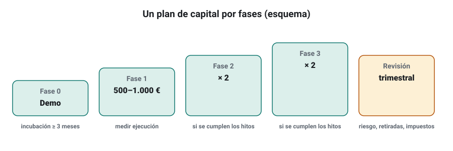
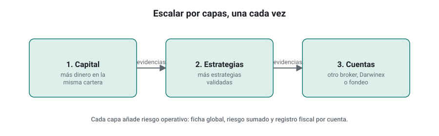
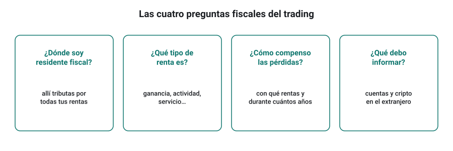
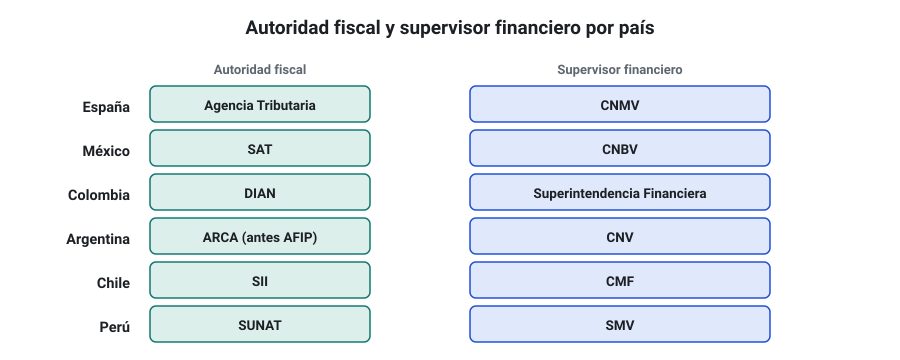

SEMANA 19 · ETAPA 5 · PROFESIONALIZACIÓN
Gestión financiera, escalado y fiscalidad
Presentación de la semana
Operar con dinero real no termina en el mercado: también hay que planificar el capital, escalar con orden, conocer qué puedes hacer y qué no según la regulación, y cumplir con Hacienda. Esta semana verás un plan de capital completo, cómo escalar varias cuentas, los límites legales entre formarse, asesorar y gestionar dinero ajeno, y los fundamentos de la fiscalidad del trading, con una ficha de cada país hispanohablante del curso.
Objetivos
Al terminar la semana sabrás:
- Redactar un plan de capital con aportaciones, retiradas y reinversión.
- Escalar varias cuentas con criterios y límites.
- Distinguir formación, asesoramiento y gestión de terceros, y saber qué exige autorización.
- Entender los conceptos fiscales básicos del trading: tipo de renta, compensación de pérdidas y obligaciones informativas.
- Localizar la autoridad fiscal y el supervisor de tu país y las preguntas que debes hacerle a tu asesor.
Plan de la semana (22–25 horas)
| Bloque | Horas | Qué harás |
|---|---|---|
| Clases | 6 | Cinco lecciones: lectura y vídeos |
| Prácticas | 12 | Plan de capital, registro fiscal y ficha de tu país |
| Investigación y evaluación | 4 | Investigación I-19, entrega y examen |
| Revisión y planificación | 2 | Glosario, cuaderno y plan del proyecto final |
Criterio para desbloquear la semana 20
Tener en estado APROBADO, con un 80 % o más cada uno:
- ☐ Examen de la semana 19
- ☐ Entrega práctica: plan financiero y ficha fiscal de tu país
- ☐ Investigación I-19: los ocho pasos documentados
Plan de capital, retiradas y reinversión
Formato: clase de 35 minutos · Lectura: 30 minutos
El plan de capital
Un plan de capital responde por escrito a cinco preguntas:
- ¿Cuánto capital dedico y de dónde sale? Solo dinero que puedas perder sin afectar a tu vida, a tus deudas ni a tu fondo de emergencia.
- ¿Cuánto aportaré en el futuro y cuándo?
- ¿Qué haré con los beneficios? Reinvertir, retirar o ambas (semana 14).
- ¿Qué caída máxima acepto antes de parar (drawdown de parada)?
- ¿Cuándo reviso el plan? Por ejemplo, cada trimestre.

Reservar para impuestos
Si tu cartera gana, parte de ese beneficio será de Hacienda. Un error habitual es reinvertirlo todo y no tener liquidez al declarar. Regla práctica: aparta en una cuenta separada un porcentaje de cada beneficio realizado (por ejemplo, el tipo marginal que te correspondería, lección 4).
Comprueba que lo has entendido
- ¿Qué cinco preguntas responde el plan de capital?
- ¿Por qué se reserva una parte de los beneficios?
- ¿Qué dinero nunca debe formar parte del capital de trading?
Gestión de varias cuentas y escalado
Formato: clase de 30 minutos · Lectura: 25 minutos
Escalar por capas
Escalar no es solo aumentar el capital de una cuenta. Puede ser:
- Más capital en la misma cartera (hitos de la semana 18).
- Más estrategias en la cartera, validadas con el mismo protocolo (semana 13).
- Más cuentas: otro broker, Darwinex o una empresa de fondeo (semana 18).
Cada capa añade riesgo operativo. Escala una capa cada vez y espera a tener evidencias antes de la siguiente.
Control global
Con varias cuentas, mantén la ficha global (semana 16) y añade:
- Capital total y riesgo total por estrategia, sumando cuentas.
- Resultado consolidado mensual.
- Registro fiscal por cuenta (lección 4): fechas, importes, divisa y tipo de cuenta.

Comprueba que lo has entendido
- Nombra tres formas de escalar.
- ¿Por qué se escala una capa cada vez?
- ¿Qué añades a la ficha global al tener varias cuentas?
Regulación: formación, asesoramiento y gestión de terceros
Formato: clase de 35 minutos · Lectura: 30 minutos
Tres actividades distintas
| Actividad | Qué es | ¿Requiere autorización? |
|---|---|---|
| Operar tu propio dinero | Inviertes por tu cuenta | No, salvo que sea tu actividad profesional en ciertos casos (fiscalmente puede tener consecuencias) |
| Formación | Enseñar conceptos y métodos de forma general | En general no, siempre que no se convierta en recomendaciones personalizadas |
| Asesoramiento de inversión | Recomendaciones personalizadas a una persona sobre instrumentos concretos | Sí: en la UE, es un servicio de inversión reservado a entidades autorizadas |
| Gestión de carteras de terceros | Decidir y operar con dinero de otros | Sí: servicio de inversión reservado a entidades autorizadas |
En España, el supervisor es la CNMV; en los demás países del curso, los supervisores de la lección 5.
Zonas grises frecuentes
- Vender señales u operativa para copiar puede considerarse asesoramiento o gestión según cómo se haga.
- Operar la cuenta de un familiar o amigo con su dinero es gestionar dinero ajeno.
- Promocionar un broker o una firma a cambio de comisiones tiene sus propias normas y obligaciones de transparencia.
- Darwinex permite que terceros inviertan en tu DARWIN porque es Darwinex, una entidad autorizada, quien presta el servicio (semana 18).
Comprueba que lo has entendido
- ¿Qué diferencia hay entre formación y asesoramiento?
- ¿Por qué operar la cuenta de un amigo con su dinero es un problema?
- ¿Por qué un inversor puede invertir en tu DARWIN sin que tú estés autorizado?
Fiscalidad: módulo común
Formato: clase de 40 minutos · Lectura: 35 minutos
Las preguntas que hay que hacerse
En todos los países, la fiscalidad del trading depende de cuatro preguntas:
- ¿Dónde eres residente fiscal? Normalmente tributas allí por todas tus rentas, también las obtenidas en brokers extranjeros.
- ¿Qué tipo de renta es? Una ganancia por vender un activo, un rendimiento de una actividad económica (si es tu profesión), un ingreso por un servicio (como el pago de una empresa de fondeo)… Cada tipo tributa distinto.
- ¿Cómo se compensan las pérdidas? Con qué otras rentas y durante cuántos años.
- ¿Qué obligaciones informativas tienes? Declarar cuentas o activos en el extranjero, criptomonedas, etc.

El registro fiscal
Sea cual sea tu país, lleva desde el primer día un registro fiscal:
- Cada operación cerrada: fecha, instrumento, resultado en la divisa de la cuenta y su contravalor en tu moneda, con el tipo de cambio usado.
- Swaps, comisiones y otros costes.
- Ingresos y retiradas de cada cuenta.
- Pagos de empresas de fondeo, comisiones de éxito y suscripciones o evaluaciones pagadas.
- Los informes anuales que te dé cada broker o plataforma.
Comprueba que lo has entendido
- ¿Por qué importa la residencia fiscal?
- ¿Qué anotas en el registro fiscal de cada operación?
- ¿Por qué el pago de una empresa de fondeo puede tributar distinto que la ganancia de tu propia cuenta?
Fichas por país: España, México, Colombia, Argentina, Chile y Perú
Formato: clase de 45 minutos · Lectura: 40 minutos
Estas fichas resumen dónde informarte y qué preguntar. Los datos de España se han consultado en noviembre de 2026; los de los demás países se limitan a las instituciones y a las preguntas clave, porque sus reglas para derivados, divisas y criptomonedas tienen muchos matices. Consulta siempre la fuente oficial y a un asesor de tu país.
España
- Agencia Tributaria: sede.agenciatributaria.gob.es · Supervisor: CNMV.
- Tipo de renta habitual del particular: las ganancias y pérdidas por operaciones con acciones, CFD, Forex o criptomonedas de tu propia cuenta suelen tributar como ganancias y pérdidas patrimoniales en la base del ahorro.
- Escala de la base del ahorro (territorio común, desde 2025):
| Base del ahorro | Tipo |
|---|---|
| Hasta 6.000 € | 19 % |
| De 6.000 a 50.000 € | 21 % |
| De 50.000 a 200.000 € | 23 % |
| De 200.000 a 300.000 € | 27 % |
| Más de 300.000 € | 30 % |
- Compensación: las pérdidas patrimoniales se compensan con ganancias patrimoniales; el saldo negativo puede compensar hasta el 25 % del saldo positivo de rendimientos del capital mobiliario (y al revés), y lo que sobre se arrastra 4 años.
- Regla de los dos meses: no se computa una pérdida al vender valores admitidos a negociación si recompras valores homogéneos dos meses antes o después; consulta con tu asesor si afecta a tus instrumentos.
- Empresas de fondeo: no hay un criterio único y sencillo; según el caso, los pagos pueden tratarse como ganancias o como rendimientos de una actividad económica. Consulta a un asesor.
- Obligaciones informativas: el modelo 720 (bienes en el extranjero, como saldos en brokers extranjeros por encima de 50.000 €) y el modelo 721 (criptomonedas custodiadas en el extranjero por encima de 50.000 €). Además, desde 2026 se aplica en la UE la directiva DAC8, por la que los proveedores de criptoactivos informan a Hacienda.
- País Vasco y Navarra tienen normativa propia.
México
- Autoridad fiscal: SAT (sat.gob.mx) · Supervisor: CNBV.
- Preguntas para tu asesor: cómo tributan las ganancias con un broker extranjero y con derivados (CFD, Forex), si existen tratamientos distintos para acciones cotizadas en bolsa mexicana, cómo se declaran las criptomonedas y las cuentas en el extranjero, y cómo se tratan los pagos de empresas de fondeo.
Colombia
- Autoridad fiscal: DIAN (dian.gov.co) · Supervisor: Superintendencia Financiera de Colombia.
- Preguntas: tratamiento de las ganancias con brokers extranjeros y derivados, ganancias ocasionales frente a renta ordinaria, declaración de activos en el exterior, criptomonedas y pagos de empresas de fondeo.
Argentina
- Autoridad fiscal: ARCA, antes AFIP (arca.gob.ar) · Supervisor: CNV.
- Preguntas: impuesto a las ganancias sobre operaciones en el exterior y con derivados, bienes personales sobre saldos en brokers extranjeros, régimen cambiario para transferir fondos, criptomonedas y pagos de empresas de fondeo.
Chile
- Autoridad fiscal: SII (sii.cl) · Supervisor: CMF.
- Preguntas: tratamiento de las ganancias de capital y de derivados con brokers extranjeros, global complementario, criptomonedas y pagos de empresas de fondeo.
Perú
- Autoridad fiscal: SUNAT (sunat.gob.pe) · Supervisor: SMV.
- Preguntas: rentas de capital frente a rentas de fuente extranjera, tratamiento de derivados y criptomonedas, y pagos de empresas de fondeo.

Comprueba que lo has entendido
- ¿Cuál es el tipo de la base del ahorro en España para los primeros 6.000 €?
- ¿Durante cuántos años se arrastran las pérdidas patrimoniales en España?
- ¿Qué autoridad fiscal y qué supervisor corresponden a tu país?
Glosario de la semana
| Término | Inglés | Definición |
|---|---|---|
| Asesoramiento de inversión | Investment advice | Recomendaciones personalizadas sobre instrumentos financieros |
| Base del ahorro | Savings tax base | Parte de la base del IRPF español donde tributan, entre otras, las ganancias patrimoniales |
| Compensación de pérdidas | Loss offsetting | Uso de las pérdidas para reducir la tributación de otras rentas |
| DAC8 | DAC8 | Directiva europea de intercambio de información sobre criptoactivos |
| Ganancia patrimonial | Capital gain | Diferencia positiva entre el precio de venta y el de compra de un activo |
| Gestión de carteras | Portfolio management | Gestión de dinero de terceros con capacidad de decisión |
| Modelo 720 / 721 | Form 720 / 721 | Declaraciones informativas españolas de bienes y criptomonedas en el extranjero |
| Plan de capital | Capital plan | Documento con el capital, las aportaciones, las retiradas y los límites |
| Registro fiscal | Tax log | Registro de operaciones e ingresos para declarar impuestos |
| Residencia fiscal | Tax residence | País en el que tributas por tus rentas mundiales |
Ejercicios obligatorios
E1 · Plan de capital. Redacta tu plan de capital respondiendo a las cinco preguntas de la lección 1.
E2 · Reserva fiscal. Si residieras en España y tu cartera ganara 4.000 € en un año (como ganancia patrimonial, sin otras rentas del ahorro), ¿cuánto pagarías? ¿Y si ganara 9.000 €?
E3 · Compensación. En España, un año pierdes 1.500 € en CFD (ganancias patrimoniales netas negativas) y cobras 2.000 € de intereses (rendimientos del capital mobiliario). ¿Cuánto de la pérdida puedes compensar ese año y cuánto se arrastra?
E4 · Escalado. Escribe tu plan de escalado por capas con sus hitos.
E5 · Regulación. Para cada caso, indica si podría requerir autorización: a) publicas en un blog cómo funciona el Walk-Forward; b) cobras por decirle a un amigo qué comprar cada semana con su dinero; c) operas la cuenta de tu hermano con su dinero; d) tu DARWIN recibe inversores en Darwinex.
E6 · Registro fiscal. Construye la plantilla de tu registro fiscal con todas las columnas de la lección 4 y rellénala con tus operaciones de demo como práctica.
E7 · Tu país. Visita el portal de la autoridad fiscal de tu país de residencia y localiza la información oficial sobre ganancias por inversiones. Cita la página y la fecha.
E8 · Preguntas al asesor. Escribe la lista de preguntas que harías a un asesor fiscal sobre tu situación concreta.
E9 · Obligaciones informativas. Averigua si en tu país hay que declarar las cuentas en brokers extranjeros o las criptomonedas y a partir de qué importe. Cita la fuente oficial.
E10 · Supervisor. Busca en el registro del supervisor de tu país la lista de advertencias sobre entidades no autorizadas y comprueba tu broker y cualquier firma que estés considerando.
Investigación I-19 y entrega práctica
Investigación I-19 · ¿Cuánto cambia el resultado neto según cómo tributa?
Paso 1 · Hipótesis. Ejemplo: «Con un resultado bruto anual de 3.000 €, el resultado neto después de impuestos y costes es al menos un 20 % menor si se obtiene a través de una empresa de fondeo (pagando evaluaciones) que en una cuenta propia».
Paso 2 · Fuentes. Normativa oficial de tu país y al menos una fuente profesional sobre la tributación de cada vía.
Paso 3 · Datos. Los resultados de tu cartera escalados a un capital hipotético.
Paso 4 · Diseño. Escenarios (cuenta propia, Darwinex Zero, fondeo), supuestos fiscales explícitos y costes de cada vía.
Pasos 5 a 7. Cálculo del neto en cada escenario y comparación.
Paso 8 · Conclusiones. ¿Qué escenario es más eficiente con tus supuestos? ¿Qué supuestos debes confirmar con un asesor?
Entrega práctica · Plan financiero y ficha fiscal
Qué entregar
| Archivo | Contenido |
|---|---|
CODIGO_S19_ENT |
Plan de capital, plan de escalado, plantilla de registro fiscal y ficha fiscal de tu país con fuentes oficiales y fecha |
CODIGO_S19_INV |
Investigación I-19 |
| Ejercicios | E1 a E10 |
Cómo se evaluará
Se valora que el plan sea concreto y prudente, que la ficha fiscal cite fuentes oficiales con fecha y que distinga claramente lo comprobado de lo que debe confirmarse con un asesor.
Examen de la semana 19 · Variante A
Tiempo orientativo: 60 minutos · Puntuación: 100 puntos · Aprobado: 80 puntos · Puedes usar calculadora, pero no el material del curso ni el tutor de IA. Si suspendes, repetirás con otra variante.
Parte A · Opción múltiple (30 puntos, 2 por pregunta)
Parte B · Cálculo (45 puntos, 15 por ejercicio)
B1. Residente en España (territorio común), sin otras rentas del ahorro. Calcula la cuota de la base del ahorro para unas ganancias patrimoniales netas de: a) 5.000 €; b) 12.000 €; c) 60.000 €.
B2. En España, un año tienes ganancias patrimoniales de 3.000 € y pérdidas patrimoniales de 5.200 €, y rendimientos del capital mobiliario de 1.600 €. a) ¿Cuál es el saldo de ganancias y pérdidas patrimoniales? b) ¿Cuánto puedes compensar con los rendimientos del capital mobiliario ese año? c) ¿Cuánto se arrastra a los años siguientes?
B3. Tu cartera gana 6.000 € brutos en un año en tu cuenta propia, pagando 400 € de costes ya incluidos en ese resultado. Si tributaras en España con la escala de la base del ahorro y sin otras rentas, ¿cuánto pagarías y cuál sería tu resultado neto? ¿Qué porcentaje del bruto debiste reservar?
Parte C · Razonamiento (25 puntos)
En un máximo de 250 palabras: un compañero quiere empezar a cobrar por compartir las operaciones de su cartera en un grupo privado y gestionar la cuenta de un familiar. Explica qué riesgos regulatorios y fiscales tiene y qué debería hacer antes.